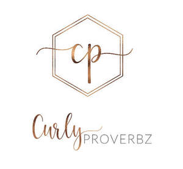
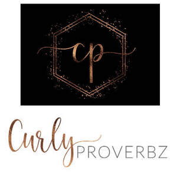

Trade Mark Journal No.2026/007 13 February 2026
UK00004331383 28 January 2026 (3,5,21,24,25,26,44)
Mark 1

Mark 2

- Class 3
- Hair care serums; Hair care lotions; Hair care serum; Hair care creams; Hair care masks; Hair care preparations; Hair care agents; Hair care lotions [for cosmetic use]; Hair care creams [for cosmetic use]; Cosmetic hair care preparations; Oil baths for hair care; Skin care mousse; Skin care cosmetics; Beard care preparations; Body care cosmetics; Hair care preparations, not for medical purposes; Skin care preparations; Skin care oils [cosmetic]; Hair cosmetics; Hair shampoos; Skin care lotions [cosmetic]; Exfoliants for the care of the skin; Hair shampoo; Facial care preparations; Skin care creams, other than for medical use; Essences for skin care; Skin, eye and nail care preparations; Hair styling lotions; Hair moisturizers; Skin care oils [non-medicated]; Hair strengthening treatment lotions; Hand masks for skin care; Shampoos for human hair; Hair lotions; Beauty care cosmetics; Beauty creams for body care; Baby hair conditioner; Hair serums; Skin care (Cosmetic preparations for -); Cosmetic preparations for skin care; Skin care creams [cosmetic]; Cosmetic creams for skin care; Hair lotion; Lotions for face and body care; Hair emollients; Hair conditioner; Soaps for body care; Hair protection lotions; Perfumed oils for skin care; Conditioners for treating the hair; Cleansing milks for skin care; Wax treatments for the hair; Hair moisturisers; Body cleaning and beauty care preparations; Foot masks for skin care; Milky lotions for skin care; Horse oil cream for skin care; Cosmetic preparations for the hair and scalp; Hair treatment preparations; Hair nourishers; Hair balm; Hair relaxers; Hair styling gel; Hair grooming preparations; Beauty preparations for the hair; Non-medicated skin care preparations; Sun care lotions; Nail care preparations; Beauty care preparations; Hair dye; Hair conditioners for babies; Non-medicated hair shampoos; Hair conditioners; Hair permanent treatments; Hair bleach; Hair rinses [for cosmetic use]; Hair creams; Hair styling waxes.
- Class 5
- Vitamin supplements; Dietary supplements consisting of vitamins; Vitamin and mineral supplements; Liquid vitamin supplements; Nutritional supplements; Calcium supplements; Probiotic supplements; Vitamin and mineral food supplements; Anti-oxidant supplements; Dietary supplements; Mineral nutritional supplements; Vitamins and vitamin preparations; Herbal supplements; Lecithin dietary supplements; Flaxseed dietary supplements; Mineral dietary supplements; Anti-oxidant food supplements; Zinc dietary supplements; Liquid nutritional supplements; Protein dietary supplements; Prebiotic supplements; Homeopathic supplements; Dietary and nutritional supplements; Multivitamins; Health food supplements made principally of vitamins; Nutraceuticals for use as a dietary supplement; Linseed dietary supplements; Flaxseed oil dietary supplements; Vitamin supplement patches; Vitamin preparations in the nature of food supplements; Mineral dietary supplements for humans; Protein powder dietary supplements; Liquid herbal supplements; Preparations of vitamins; Health-aid foods supplements containing ginseng; Dietary supplements for humans; Preparations for supplementing the body with essential vitamins and microelements; Gummy vitamins; Linseed oil dietary supplements; Nutritional supplements consisting primarily of magnesium; Dietary supplements in powder form; Nutritional supplements consisting of fungal extracts; Vitamin tablets; Health food supplements made principally of minerals; Nutritional supplements consisting primarily of zinc; Dietary supplements with a cosmetic effect; Dietary supplements consisting primarily of magnesium; Dietary supplements consisting primarily of calcium; Antioxidant pills; Multi-vitamin preparations; Herbal dietary supplements for persons special dietary requirements; Vitamin and mineral preparations; Vitamin drinks; Multivitamin preparations; Dietary supplements promoting fitness and endurance; Vitamin preparations; Powdered nutritional supplement drink mix; Anti-oxidants obtained from herbal sources; Health food supplements for persons with special dietary requirements.
- Class 21
- Hair combs; Hair brushes; Combs for back-combing hair; Electric hair combs; Combs for the hair (Large-toothed -); Large-toothed combs for the hair; Wide tooth combs for hair; Hair color application brushes; Shampoo brushes; Combs; Shaving brushes.
- Class 24
- Silk fabrics; Silk cloth; Silk [cloth]; Woven silk fabrics; Spun silk fabrics; Cotton fabric; Pillowcases; Pillowcases [pillow slips]; Hand spun silk fabrics; Cotton cloths; Hand-towels made of textile fabrics; Cloth handkerchiefs; Silk base mixed fabrics.
- Class 25
- Head scarves; Head wear; Scarves; Head bands; Silk scarves; Beanie hats; Shoulder wraps [clothing]; Shoulder wraps for clothing; Shoulder wraps.
- Class 26
- Hair ornaments, hair rollers, hair fastening articles, and false hair; Hair twisters [hair accessories]; Hair ornaments in the nature of hair wraps.
- Class 44
- Hair care services; Services for the care of the hair; Skin care salons; Skin care salon services; Services for the care of the scalp; Advice relating to hair care; Hair treatment; Services for the care of the skin; Hair treatment services; Beauty care; Cosmetic treatment for the hair; Hair salon services; Hair styling services; Hair perming services; Cosmetic treatment services for the body, face and hair; Hair straightening services; Advisory services relating to hair care; Services of a hair and beauty salon; Hair salon services for children; Nail care services; Hair braiding services; Hair styling; Hair salon services for women; Health care; Hair dressing salon services; Hair dyeing services; Hair salon services for men; Hair coloring services; Services for the care of the face; Shampooing of the hair; Hair colouring services; Cosmetic body care services; Beauty care services; Hair cutting services; Hair curling services; Hygienic and beauty care; Hair tinting services; Hygienic and beauty care services.
Curly Proverbz Ltd